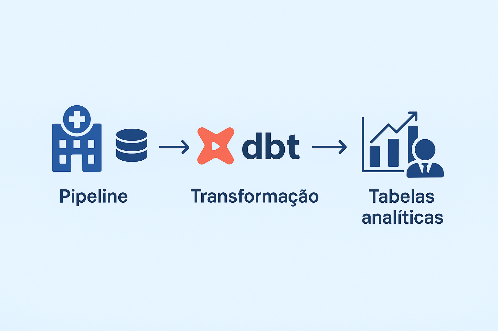

Featured Projects
Dimensional Modeling & SQL Analysis
Project with emphasis on dimensional modeling, SQL queries, and data quality assessment in payments and clients.
View on GitHub
Profile Analysis with Clustering
Exploratory analysis and clustering to identify patterns of financial inclusion among Brazilian women.
View on GitHubData Engineering & Analytics for Social Impact
Technical solutions structured with best practices and analytical reasoning.
View on GitHubOperational Efficiency Analysis
Analysis to identify bottlenecks in customer service and estimate the risk of client churn.
View on GitHub

Health Data Engineering
Pipeline that brings SUS data to life and translates it into analytical value.
View on GitHub